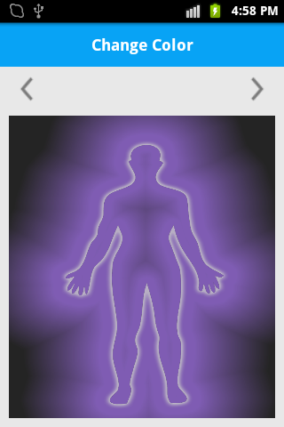

Change Image Color
Introduction
This project shows how to change Image color programmatically. This technique is based on change HSV value pixel by pixel.
Code Snippet
ColorMatrix is used to change current HSV value. This method counts the next value using
current passed value based on Math.sin and Math.cos function. We need to set that ColorMatrix filter to our Bitmap.
HSV array has
HSV[0] - Hue (Range From 0 to 360) HSV[1] - Saturation (Range From 0.0 to 1.0) HSV[2] - Lightness (Range From 0.0 to 1.0)
First of all create a Activity like as below.
public class ColorChangeActivity extends Activity {
private Bitmap mSourceBitmap;
private ImageView mImageView;
...
@Override
public void onCreate() {
super.onCreate();
mImageView = (ImageView) findViewById(R.id.myimage);
mSourceBitmap = BitmapFactory.decodeResource(getResources(), R.drawable.yourimage);
...
}
}
Create one more method cleanValue to get min value.
private float cleanValue(float val, float limit) {
return Math.min(limit, Math.max(-limit, val));
}
private void adjustHue(ColorMatrix colorMatrix, float value) {
value = cleanValue(value, 180f) / 180f * (float) Math.PI;
if (value == 0) {
return;
}
float cosVal = (float) Math.cos(value);
float sinVal = (float) Math.sin(value);
float lumR = 0.213f;
float lumG = 0.715f;
float lumB = 0.072f;
float[] mat = new float[] {
lumR + cosVal * (1 - lumR) + sinVal * (-lumR),
lumG + cosVal * (-lumG) + sinVal * (-lumG),
lumB + cosVal * (-lumB) + sinVal * (1 - lumB), 0, 0,
lumR + cosVal * (-lumR) + sinVal * (0.143f),
lumG + cosVal * (1 - lumG) + sinVal * (0.140f),
lumB + cosVal * (-lumB) + sinVal * (-0.283f), 0, 0,
lumR + cosVal * (-lumR) + sinVal * (-(1 - lumR)),
lumG + cosVal * (-lumG) + sinVal * (lumG),
lumB + cosVal * (1 - lumB) + sinVal * (lumB), 0, 0, 0f, 0f, 0f,
1f, 0f, 0f, 0f, 0f, 0f, 1f };
colorMatrix.postConcat(new ColorMatrix(mat));
}
private ColorFilter adjustHue(float value) {
ColorMatrix colorMatrix = new ColorMatrix();
adjustHue(colorMatrix, value);
return new ColorMatrixColorFilter(colorMatrix);
}
To get next or previous color, you can use Left or Right arrow.
Screen Shots

Download
Full Source is available from Here.
License
Copyright 2013. Licensed under the Apache License, Version 2.0 (the "License"); you may not use this file except in compliance with the License. You may obtain a copy of the License at http://www.apache.org/licenses/LICENSE-2.0 Unless required by applicable law or agreed to in writing, software distributed under the License is distributed on an "AS IS" BASIS, WITHOUT WARRANTIES OR CONDITIONS OF ANY KIND, either express or implied. See the License for the specific language governing permissions and limitations under the License.